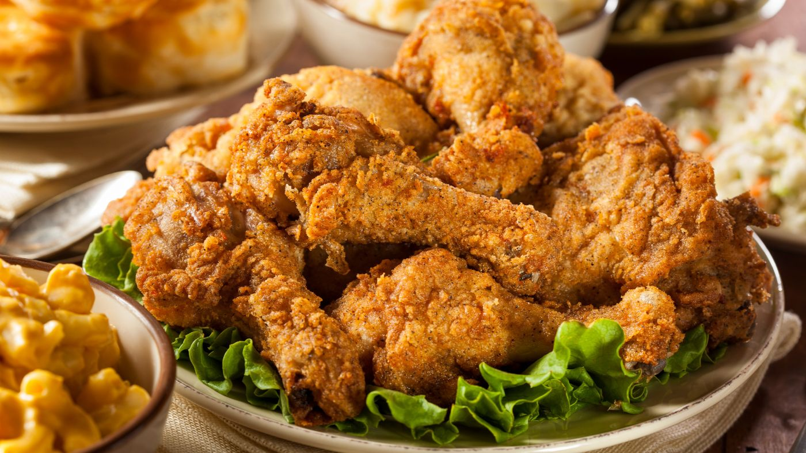

Delicious Fried Chicken

Fried chicken has been described as being "crunchy" and "juicy", as well as "crispy". The dish has also been called "spicy" and "salty". Occasionally, fried chicken is also topped with chili like paprika, or hot sauce to give it a spicy taste.
Ingredients
For the Chicken:
- 4 chicken thighs
- 4 chicken drumsticks
- 2 cups buttermilk
- 1 tablespoon hot sauce (optional)
- Salt and pepper, to taste
For the Coating:
- 2 cups all-purpose flour
- 1 tablespoon paprika
- 1 tablespoon garlic powder
- 1 tablespoon onion powder
- 1 teaspoon cayenne pepper
- 1 teaspoon salt
- 1 teaspoon black pepper
For Friying:
- Vegetable oil, for frying
Instructions
- In a large bowl, combine the buttermilk and hot sauce. Season the chicken thighs and drumsticks with salt and pepper, then submerge them in the buttermilk mixture. Cover and refrigerate for at least 4 hours, preferably overnight.
- In a large shallow dish, combine the flour, paprika, garlic powder, onion powder, cayenne pepper, salt, and black pepper. Mix well.
- Remove the chicken pieces from the buttermilk mixture, allowing the excess to drip off. Dredge each piece in the seasoned flour mixture, pressing the flour onto the chicken to ensure a thick, even coating. Place the coated chicken on a wire rack and let it rest for 15-20 minutes.
- In a large, deep skillet or Dutch oven, pour in enough vegetable oil to reach a depth of about 1 1/2 inches. Heat the oil over medium-high heat until it reaches 350°F (175°C). Use a thermometer to maintain the temperature.
- Carefully add a few pieces of chicken to the hot oil, being careful not to overcrowd the pan. Fry the chicken for about 12-15 minutes, turning occasionally, until the coating is golden brown and crispy and the chicken is cooked through (internal temperature should reach 165°F or 74°C).
- Remove the fried chicken from the oil and place it on a wire rack set over a baking sheet to drain any excess oil. Let it rest for a few minutes to ensure it stays crispy.
- Serve hot, with your favorite dipping sauces and side dishes.